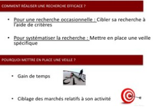

Mettre en place une veille sur les appels d’offres publics
Appels d’offres publics - Les principaux supports de publicité
Plusieurs pistes sont à explorer car les modalités de publicité vont dépendre des seuils, de la nature des achats à effectuer, …
De manière globale on peut dire que la publicité d’annonces de marché public utilise plusieurs supports dont les principaux sont :
BOAMP et au JOUE, pour consulter des publicités de marchés du JOUE en fonction des activités ou secteurs concernés.
les journaux d'annonces légales (JAL),
le profil d'acheteur (sachant que depuis le 1er janvier 2010 et pour ses marchés de plus de 90 000 € (HT), le pouvoir adjudicateur doit aussi y publier les avis d’appel public à la concurrence, ainsi que les documents de la consultation),
les supports de publicité complémentaires, tels qu’une publication sur des sites Web, dans la presse quotidienne régionale, dans la presse spécialisée ou la publication par affichage.
Notons que de nombreux acheteurs, notamment pour les marchés de faible montant, diffusent également des annonces par écrit par divers moyens comme : le courriel, le courrier, la télécopie, … après avoir procédé à un "référencement" d'opérateurs économiques.
Source : http://www.marche-public.fr
Comment trouver des appels d'offres en cours et connaître les consultations ?
(C'est simple et c'est GRATUIT avec un minimum de connaissances - INUTILE de vous abonner à une formule payante)
Toute entreprise souhaitant répondre aux marchés publics doit d'abord passer par une phase de recherche des annonces et publicités. Lecture du BOAMP, du JOUE, de la presse spécialisée, sites Web, ... ainsi que la mise en place d'une veille sont autant de méthodes pour trouver des annonces de marchés. La connaissance des codes CPV de votre activité est fondamentale.
Il est totalement inutile de vous abonner à une formule payante. En effet le BOAMP vous offre la possibilité de recevoir gratuitement des alertes via votre messagerie électronique.
Certains supports (gratuits également) vous permettent d'assurer une veille). Il vaut donc mieux tester des formules gratuites qui dans la majorité des situations suffisent amplement.
Rappelons d'abord que l'appel d’offres (qui peut être ouvert ou restreint) n'est qu'une des procédures de marchés publics utilisables pour la passation d'un marché public.
Dans la pratique les deux procédures les plus utilisées sont : l'appel d'offres précité et la procédure adaptée.
Une entreprise qui souhaite effectuer une réponse à un marché public doit d'abord s'informer sur l'existence des marchés en cours en recherchant les annonces d'appels d'offres publics. Elle peut s'informer directement et périodiquement auprès des services acheteurs mais cette procédure est fastidieuse. Il est préférable qu'elle instaure une veille sur les marchés publics dont les appels d'offres et les procédures adaptées ainsi que sur les alertes du BOAMP, JOUE, … sur les annonces passées par les acheteurs.
La démarche va donc consister à s'informer pour détecter les consultations en cours.
Les plateformes de dématérialisation permettent de :
Rechercher et consulter les annonces d'avis de marchés, d'avis d'attribution, et donc de trouver des publicités de marchés ;
Télécharger les Dossiers de Consultation des Entreprises (DCE) pour obtenir les principales informations ;
Transmettre sous forme électronique les réponses aux appels d'offres (réponse électronique aux marchés publics qui peut être rendue obligatoire) ;
Et, pour certaines, de disposer d'un service d'alerte gratuit, qui peut être quotidien ou hebdomadaire, selon des critères définis par les entreprises.
Vous pouvez rechercher des marchés via les codes CPV
Si vous souhaitez rechercher des marchés vous pouvez commencer par effectuer des recherches au BOAMP et programmer des requêtes, ou mieux, programmer des alertes ; c'est gratuit. Il existe bien entendu d’autres sources.
Au BOAMP il est conseillé de programmer les recherches et alertes via les codes CPV ; cela permettra de CIBLER les annonces. Il faut d'abord rechercher les codes de la NOMENCLATURE CPV qui correspondent à vos prestations, ce n'est pas forcément immédiat.
Cette méthode de recherche via les codes CPV ne doit cependant pas être la seule mais elle est primordiale, et il faut quand même conserver en plus la recherche par mots-clés sinon vous manquerez des annonces de marchés.
La veille sur les marchés publics - Source CCI Orléans
Questions fréquentes sur le service d'alerte BOAMP : https://www.boamp.fr/pages/aide-faq-service-alerte/
Moteur de recherche d'appels d'offres de marchés publics : https://www.e-marchespublics.com/

Impossible d'accéder à la ressource audio ou vidéo à l'adresse :
La ressource n'est plus disponible ou vous n'êtes pas autorisé à y accéder. Veuillez vérifier votre accès puis recharger la vidéo.